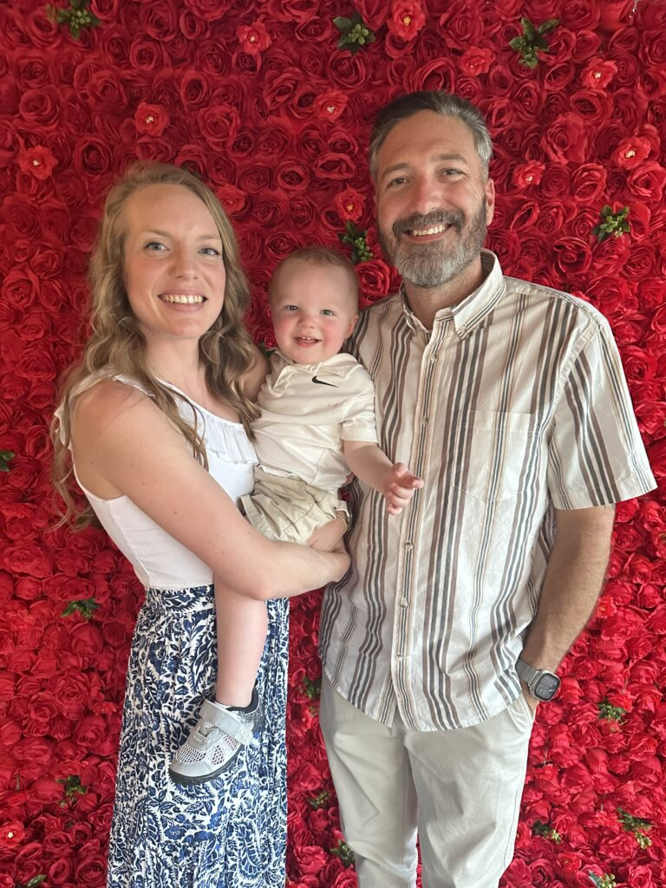

My Resume
Objective Statement:
As a web designer with a year of experience in SEO, content writing, Google Analytics, Google My Business, Facebook Ads, and Google Ads, I am dedicated to enhancing online presence and driving business growth. I am eager to continue expanding my skills and contribute to impactful projects in future roles.
Education:
University of Oklahoma
BAS in Mathematics
Norman, Oklahoma
2016-2019
GPA: 3.09
Work Experience:
Senior Teacher
Lawton Public Schools
22-Present
IT Help Desk Technician
Continental Resources, Inc.
21-22
Dell Server Engineer 1
Dell Technology Services
19-21
Skills:
- Continuous Learning: Eager to stay updated with the latest industry trends and technologies.
- SEO: Expertise in optimizing websites for search engines
- Web Design: Proficient in creating visually appealing and user-friendly websites.
Awards, certifications, or other achievements:
- Team Lead
- Character Team Leader
- The Complete SEO Content Writing Course for Web Promotion Certificate
- The Ultimate ChatGPT Course Certificate
- SEO Audit Certificate
- Google Ads for Beginners 2024 Certificate
- Google My Business-Complete Listing Optimization Training Certificate
- Facebook Ads & Facebook Marketing for Beginners 2024 Certificate
- The Ultimate Google Analytics Course for Beginners Certificate
- Advanced SEO Strategies 2024 Certificate
- The Ultimate SEO Training 2024 & SEO for Wordpress Websites Certificate
